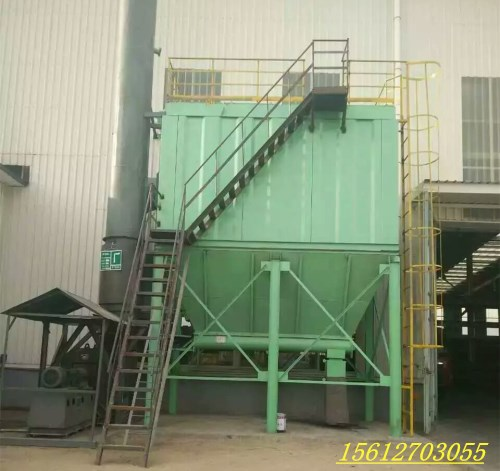
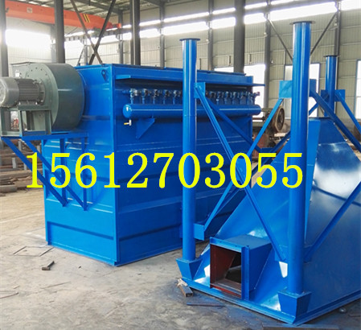
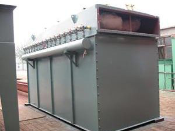

 小型锅炉除尘器 小型 锅炉除尘器，小型锅炉除尘器厂家公司提供小型锅炉除尘器参数， 布袋除尘器 以及维修安装，我公司技术工程师根据锅炉布袋除尘器实际工况，为您提供最科学最合理... 查看详情 →
 锅炉专用布袋除尘器 锅炉 布袋除尘器，锅炉布袋除尘器厂家，锅炉专用布袋除尘器报价，锅炉专用布袋除尘器因温度高，含硫量大，操作维护困难一直以来是困扰环保行业的一大难题，我公司跟... 查看详情 →
 10T锅炉除尘器 10T 锅炉除尘器 采用国内先进复合材料玻璃钢树脂，耐腐蚀，耐磨程度高，使用寿命长，多功能一体化，占地面积小，安装简便，不增加任何动力，阻力小，耗水少，喷淋系统采用... 查看详情 →